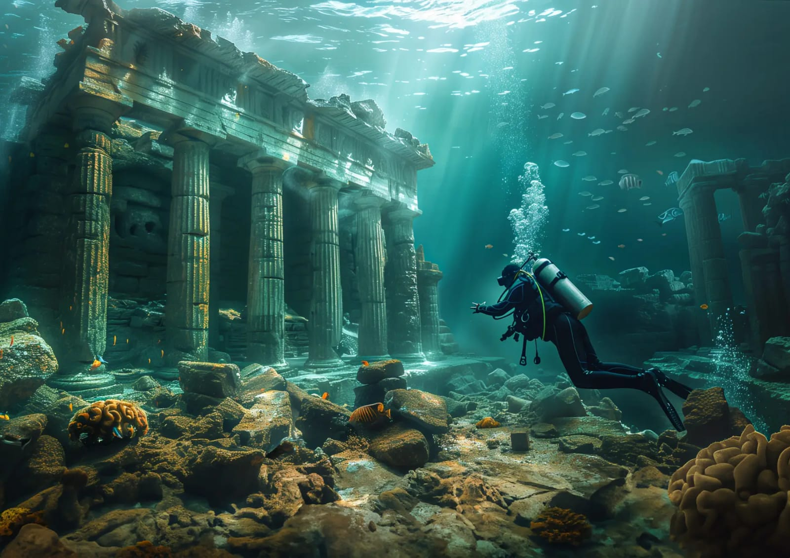
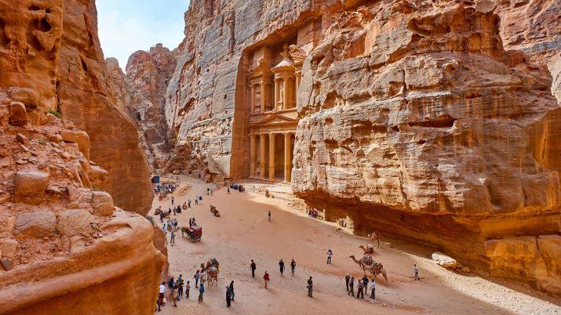

Welcome to the journey through the lost cities of the world. These ancient sites hold mysteries of forgotten civilizations, their rise, and their untimely fall. Click below to explore these legendary locations.
| Atlantis | Pompeii | Machu Picchu |
|---|---|---|
|  |
|
|
| Troy | Cahokia | Petra |
|
|
 |
Atlantis is believed to have been destroyed by catastrophic natural events, such as a tsunami or volcanic eruption. However, its true existence remains a subject of debate among historians and archaeologists.
The ash from Mount Vesuvius covered Pompeii quickly, preserving its structures and artifacts under a thick layer of volcanic material. This unique preservation gives us a detailed glimpse into Roman life.
Some believe the Incas abandoned Machu Picchu due to Spanish conquests, though the true reason remains unknown. Its rediscovery in the early 20th century brought it worldwide attention.
Archaeological evidence supports the existence of Troy, but whether the Trojan War occurred as described in "The Iliad" is still debated. The city’s multiple layers suggest a long and tumultuous history.
The decline of Cahokia may have been caused by environmental changes, resource depletion, or social upheaval. Its abandonment remains one of the great mysteries of North American history.
Petra, the capital of the Nabataean Kingdom, fell into decline due to a combination of changing trade routes, earthquakes, and invasions. While it remained inhabited for centuries, its true rediscovery in the 19th century by Western explorers revived its fame. Some theories suggest that Petra's isolation led to its gradual abandonment.
| City | Era | Location |
|---|---|---|
| Atlantis | 9600 BCE (Mythical) | Atlantic Ocean (Speculated) |
| Pompeii | 79 AD | Italy |
| Machu Picchu | 1450 | Peru |
| Troy | 3000 BCE - 1200 BCE | Turkey |
| Cahokia | 1050 - 1350 AD | USA (Illinois) |
| Petra | 6th century BC | Jordan |